Workshop
Building a JBoss BPM Travel Agency
You have now completed your JBoss Fuse portion of this lab, all the needed microservices have been deployed. Now we have everything we need... rules, processes, forms and microservices. Let's take JBoss BPM Travel Agency it for a spin, shall we, and book our first trip?
Lab 05 - Running JBoss BPM Travel Agency
Lab Goal
To build & deploy the project and complete a fraudulent payment with the JBoss BPM Travel Agency.
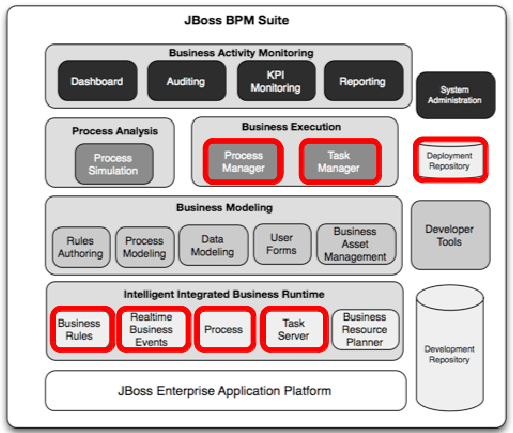
Run JBoss Travel Agency
You can compare your project run to ours by clicking on the image below to view the video online...
Ensure project builds
- Before you build project, ensure there are no active deployments
Deploy -> Process Deployments- if exists an entry for
Special Trips Agency 2.0.0then remove by clicking on mini icon
 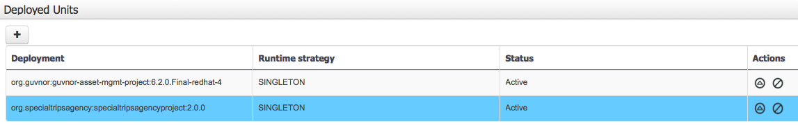
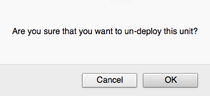
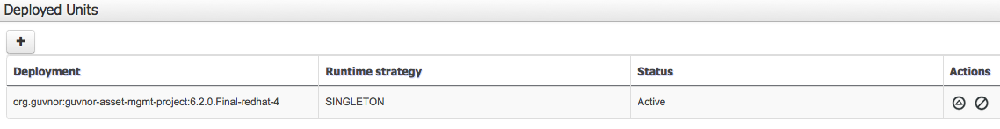
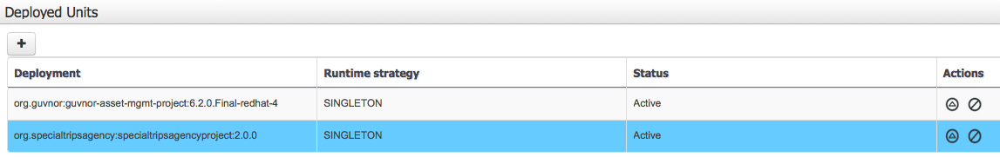
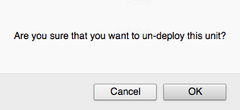
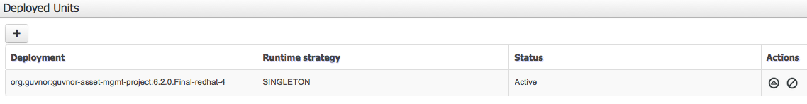
Ensure project builds
- right pane ->
OPEN PROJECT EDITOR -> BUILD (top right) -> BUILD & DEPLOY (should see green pop-up 'Build Successful')
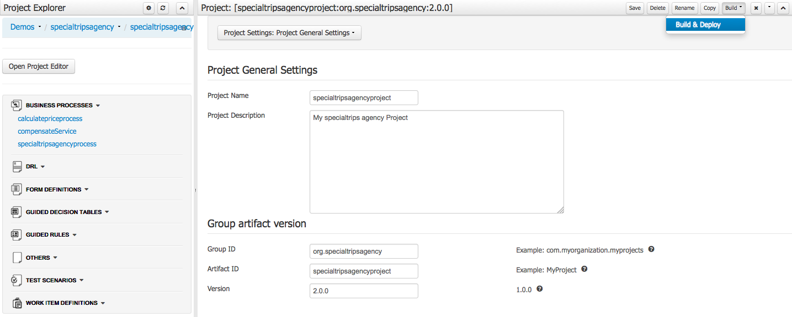
Run JBoss Travel Agency
- Now we can examine our deployed process definition
Project Authoring -> Process Mangement -> Process Definitions- View definition details, click on the specialtripsagencyprocess
Run JBoss Travel Agency
- An overview of the various details is shown
- You can start a process instance from here by clicking the New Instance button
- But we will use the external web application:
Run JBoss Travel Agency
- Fill in form, only modify these fields:
Applicant Name: [your name]Email Address: [your@email.com]Number Of Travelers: 2Preferred Date Of Arrival: 2015-06-28Preferred Date Of Departure: 2015-06-30
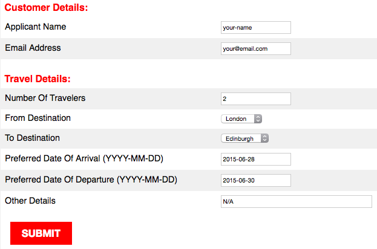
Run JBoss Travel Agency
- Submit your travel request (click on button)
- This uses the RESTAPI to start your process instance, returning a number that applications use to continue further intereacitons with this instance.
Run JBoss Travel Agency
Project Authoring -> Process Mangement -> Process Instances- View both running (ACTIVE) and completed sub-process (COMPLETED) to see your instance
Run JBoss Travel Agency
- View by clicking on completed
calculatepriceprocess - View tabs on right pane for details, variables, logs, etc.
Run JBoss Travel Agency
- click on
OPTIONS -> PROCESS MODELto view path taken - the grey path is where the process went, here we see the validation, discount and total pricing were calculated before retracting our facts from memory and exiting this sub-process
Run JBoss Travel Agency
- Now lets examine our progress in the main process
- View by clicking on active
specialtripsagencyprocess - View tabs on right pane for details, variables, logs, etc.
Run JBoss Travel Agency
- Click on
OPTIONS -> PROCESS MODELto view path, resize process with top right button on menu bar - The grey path is where the process went, here we see the sub-flow calculated pricing, now
waiting on
Employee Bookingreview task, so let's process a task!
Run JBoss Travel Agency
- Open the task list to view waiting user tasks
Project Authoring -> Tasks -> Tasks List
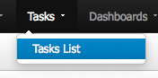
- Our task is in the Active and Group lists until claimed
Run JBoss Travel Agency
- Click on task to open the
Employee Bookingtask - The right pane opens with our task form, but first must
CLAIMit, click button at bottom

Run JBoss Travel Agency
- Note that the task is no longer available for
GROUPto claim - Task is now in your
PERSONALlist, just for you to work on
Run JBoss Travel Agency
- We will now confirm the booking by filling in:
Option 2: check boxCC Number: 1234567890Expiry Date: 05/18Name: your-name

Run JBoss Travel Agency
- Click on
COMPLETEbutton to submit task form.
Run JBoss Travel Agency
- The task will complete, presented empty task list 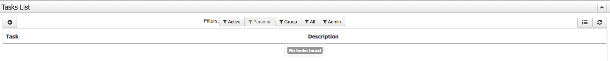
- Now we can go back and view the completed process instance(s)
Process Management -> Process Instances
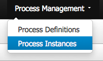
Run JBoss Travel Agency
- The initial view is empty as you are looking at Active process instances 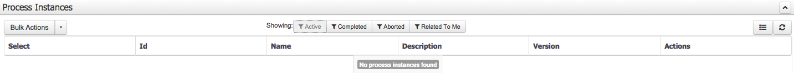
- We need the Completed instances, you should have three 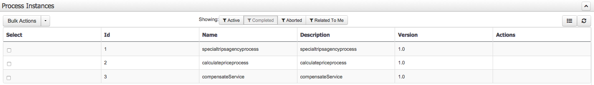
Run JBoss Travel Agency
- Here we selected process instance with ID 1
- There are various details we can examine, but we will open the process image 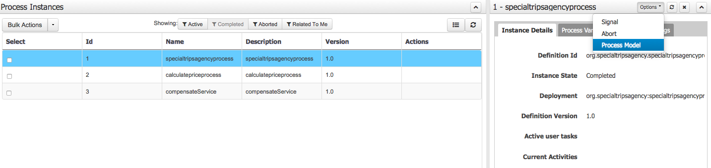
Run JBoss Travel Agency
- Note the path taken is grey and we see that it completed after payment processing
- This process contains fraud detection based on credit cards starting with
'1234' - As we submit such a card, did the payment get rejected? Let's go see... 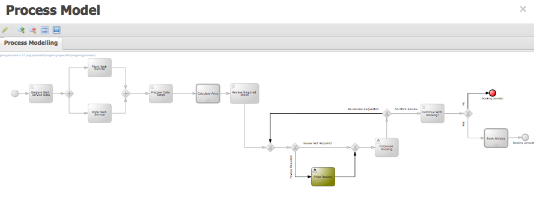
Run JBoss Travel Agency
- Let's view process instance with ID 3
- There are various details we can examine, but we will open the process image 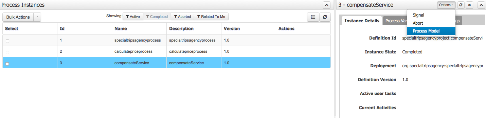
Run JBoss Travel Agency
- Note the path taken is grey and we see that it booked the Flight and Hotel before checking for a fraudulant payment method, which it found, causing the route with compensation (rollback) to be taken, signalling Flight and Hotel compensation service tasks.

Run JBoss Travel Agency
- Can also examine the server log (console where you started JBoss BPM Suite server) to see the compensation (rollback) activites:
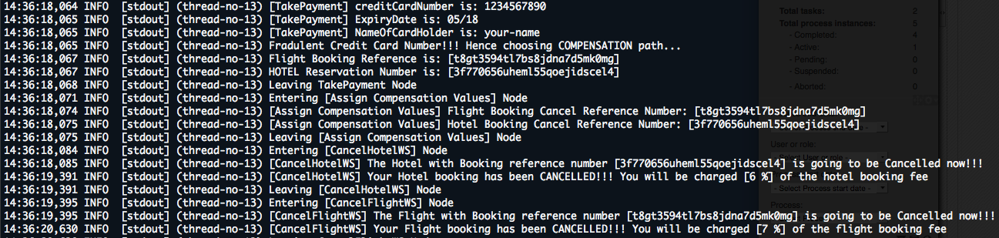
Run JBoss Travel Agency
- Now lets start a new process instance (remember how?) and not complete it
- We will leave it to make the BAM (Business Activity Monitoring) dashboards interesting
- After starting a new process, open Process & Task Dashboard
Dashboards -> Process & Task Dashboard
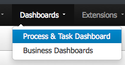
Run JBoss Travel Agency
- The dashboard shows the information on process and tasks, click on specialtripsagency to drill down on active instances...

Run JBoss Travel Agency
- Note there are many more data overviews, feel free to browse around...
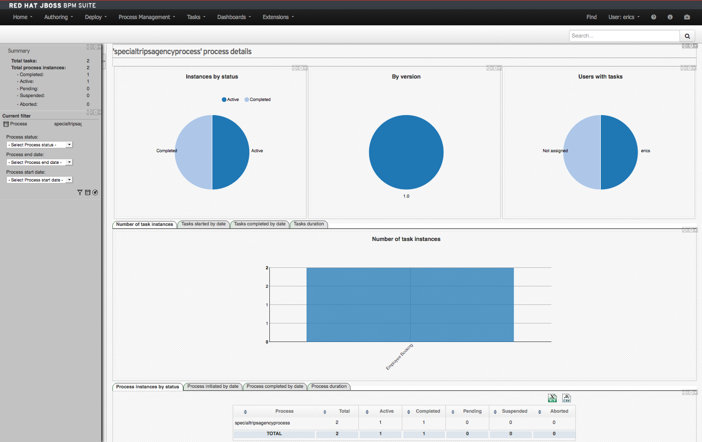
Run JBoss Travel Agency
- Extra credit: find and examine the main process service tasks to see how your JBoss Fuse microservices have been integrated:
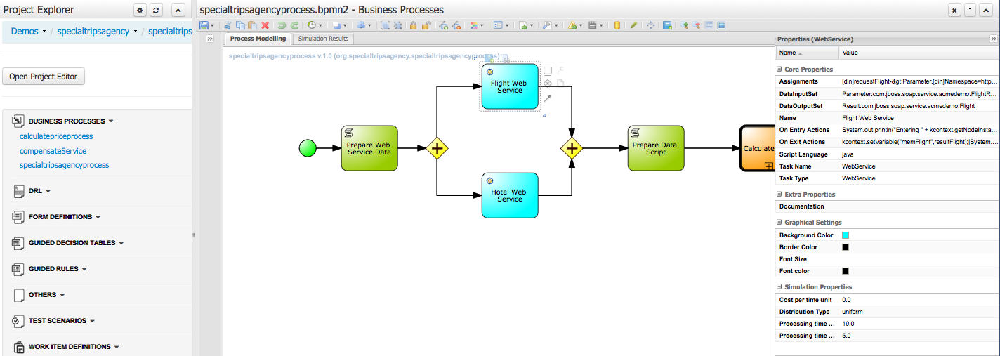
Run JBoss Travel Agency
- Extra credit: find and examine the rule in the script task that detects and triggers fraud for credit cards staring with '1234' (hint - look in compensation sub-process):
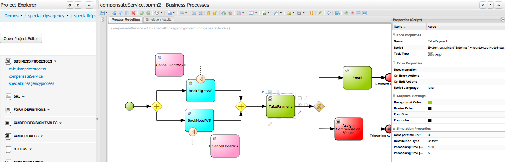
Run JBoss Travel Agency
- Extra credit: find and examine the user task 'Employee Booking' to see how form data is mapped to the bookings task form (hint - open the task form too):
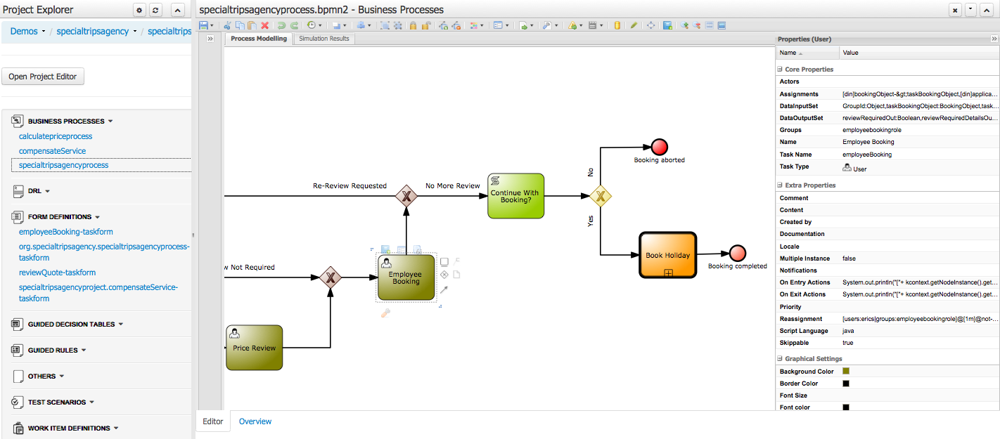
Run JBoss Travel Agency
You can compare your project run to ours by clicking on the image below to view the video online...

- Racing Camel with BPM and Red Hat JBoss Fuse
Racing Camel with
BPM and Red Hat JBoss Fuse
(Thanks for attending!)
Eric D. Schabell & Christina Lin
JBoss Technology Evangelists
JBoss Technology Evangelists